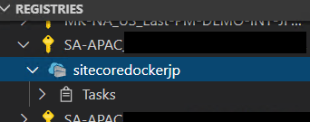

4. Microsoft Azure への展開¶
Microsoft Azure には Docker のコンテナを管理するためのサービスとして、Container Registry を提供しています。
4.1. Container Registry の作成¶
Azure ポータル画面、およびコマンドラインでも作成することができますが、ここでは Visual Studio Code のサイドバーで作業を進めます。まず作成をしたいサブスクリプションを選択して、右クリックしてください。メニューにある Create Registry... を選択します。

画面の上部にダイアログが表示されて、Registry name の入力を促してきます。

Enter を入力すると次のパラメーターが表示されます。どの価格を利用するのか、という選択肢となります。ここでは、 Standard を選択してください。
{kind=link}
続いてリソースグループを選択します。新規に作成することも可能です。

最後にデータセンターを選択してください。

実際に作成されたレジストリを見ることができます。
4.2. Container Registry にイメージをコピーする¶
ローカルで作成をした Docker イメージを Azure の Container Registry に展開します。まず上記で作成をした Azure Contaner Registry を標準に設定します。Visual Studio Code でレジストリを右クリックして、Set as Default とします。
以下のイメージをコピーする形で進めていきます。
sitecore-xp-sxa-cd
sitecore-xp-sxa-solr
sitecore-xp-sxa-sqldev
sitecore-xp-sxa-standalone
sitecore-xp-xconnect
sitecore-xp-xconnect-automationengine
sitecore-xp-xconnect-indexworker
sitecore-xp-xconnect-processingengine
{kind=link}
まず、Push する先のレジストリに対してログインを実行します。
az acr login --name sitecoredockerjp
{kind=link}
ログインに成功した後は、左側の一覧から順に Push を実行していきます。今回はまず最初に sitecore-xp-xconnect を push します。
実際にイメージの名前を入力が促されるため、イメージの名前そのままを指定して Enter を押します。

続いて、Push のプロセスが走ります。
{kind=link}
Push が完了したかどうか、Azure ポータルで確認をしてください。
{kind=link}